這樣走比較快
住在這麼舒服的宿舍裡面，但是卻沒有電力，整個影響很大。
早上睡醒電力依然沒有恢復，外頭走廊的燈則是亮得耀眼，真是見到鬼，只有我住的這一間停電。
按電鈴叫醒應該是管理員的婆婆，請她打開上鎖的變電箱，扳回保險絲開關之後電力總算恢復了供應。
一整個早上都在用電腦處理各式各樣的事情，旅行的時候發現自己沒網路也可以活得下去，但真是很不方便。
這邊是宿舍的所在地，莫斯科的道路牌作得像招牌一樣，除了掛在牆壁上的，還有豎立在街角的，而且到了晚上都會發光，很容易辨識路名。
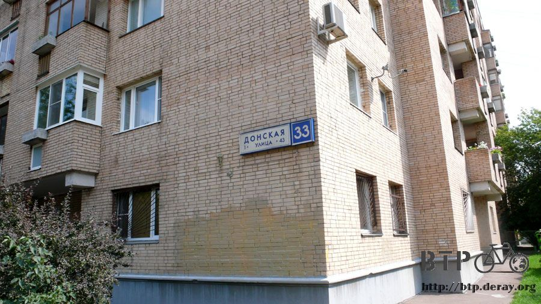
將近中午的時候MSI的Shufei請司機大叔開車，帶我去外交部在莫斯科的辦事處拜會。
外交部的耿秘書以及凱右帶我們到一家叫『蝶』的日式料理店共進午餐。
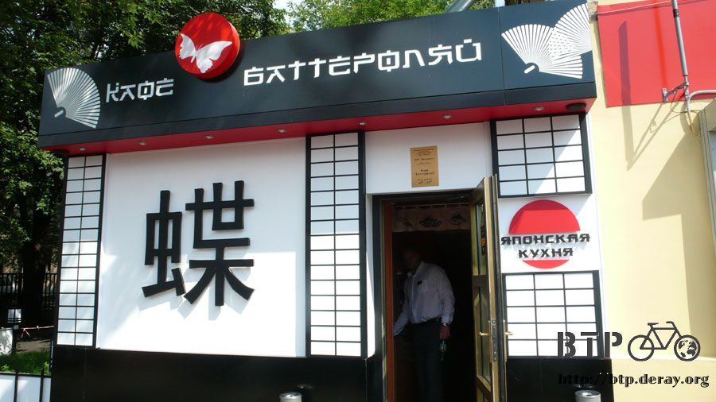
今天最重要的事就是辦理烏克蘭簽證，席間外交部的人說有壞消息要跟我講。
早在我抵達莫斯科之前，外交部的人就已經和烏克蘭辦事處連繫好，對方口頭上說辦理簽證沒有問題。
問題在於辦事處只開到下午一點，所以當我們在吃午餐的時候，烏克蘭辦事處的人已經下班回家了。
明天星期三打算再去一次，但是烏克蘭辦事處休假，要一直等到星期四才有辦法去辦理簽證。
簽證核發下來的時間不知道要等多久，如果要一個星期的話，那前前後後我要在莫斯科待上十天，簽證效期都快過了。
還有烏克蘭的簽證費用貴得很不合理，兩天一夜的觀光簽證居然要價五千盧布，而一個月效期、單次進出的簽證更要價將近兩萬台幣。
雖然簽證很重要，沒簽證就進不了烏克蘭，但錢不是這麼亂花的，一切還是得等星期四到烏克蘭辦事處之後才知道詳細的情況。
拋開壞消息，這間餐廳的食物很好吃，店裡裝潢也很有日式風味、服務生穿著和服、播放著日文歌曲，聽說廚師也是從日本來的。
跟大家一樣點了炸雞套餐，味道跟鹽酥雞好像呀，想念台灣的時候到這邊吃飯很不錯，商業午餐的價錢很平價，單點料理的價錢則是貴得驚人。
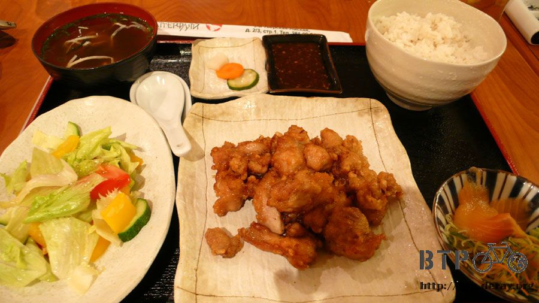
吃飯的時候跟大家聊天，聽到很多莫斯科警察惡劣的行徑，真是讓我不寒而慄。
警察可以公然勒索你，明明證件沒問題他就是硬要找你麻煩，你可以選擇給他錢或是不給他錢。
給錢的話都是幾千塊盧布的損失，這可不是小錢；不給錢的話那更慘，警察叫你上車說要帶你去警局，然後載到荒郊野外行搶，整個皮包都沒了。
各種事跡聽得我啞口無言，也很慶幸自己這麼一路騎過來都沒被警察刁難。
莫斯科跟俄羅斯真的不能相提並論，完全是不一樣的人文和感受，進入莫斯科的我應該當作自己進入另一個國家這樣會比較適當一點。
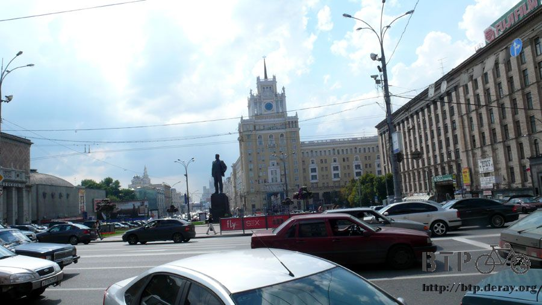
吃過飯後搭車回到微星的辦公室，昨天自己找到這邊，距離最近的時候只有短短十公尺，可是從外觀上怎麼也看不出來裡面是辦公室。
今天終於讓我看見MSI的招牌了，這邊有二十幾個人，但常駐的只有三位台灣人Shufei、Kevin、Francis ，這次還遇到來出差的Clark和Rita。
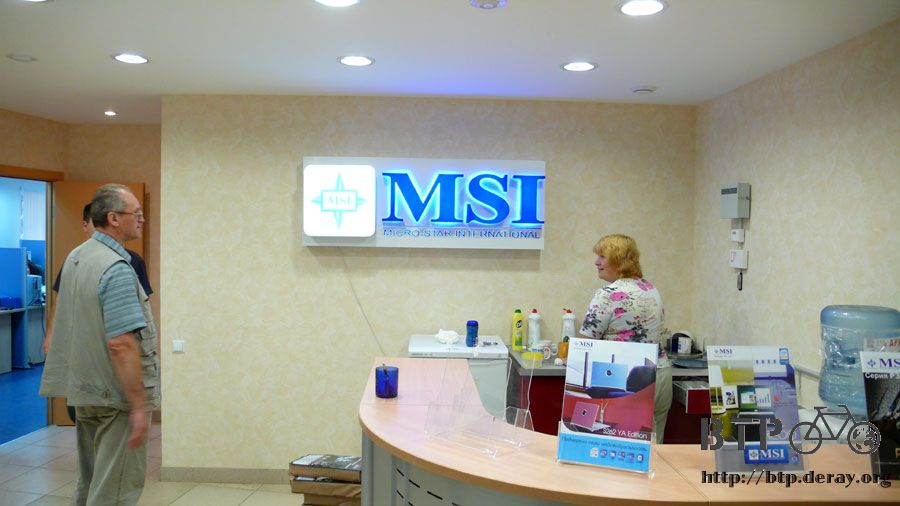
在這裡領回台灣寄過來的補給品，這次的補給很簡單，沒有烏魯木齊那樣多采多姿。
因為寄東西到莫斯科很容易被海關刁難，為了讓包裹通關順利一點，就簡化了補給品的內容。
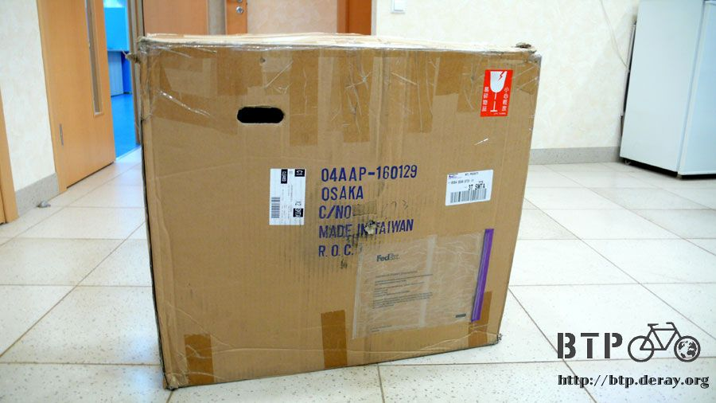
裡面有兩個全新的輪胎，全部配置到好，輪框、外胎、內胎、齒輪，只需要花十秒鐘就可以裝上去，賦予小多新的生命。
這兩個輪胎得來不易，是RST的店長Dino向日本的Louis Garneau總部申請來的，聽說日本很在意鋼絲斷掉的事情，還特地拿了一組強化版給我。
之前太陽眼鏡被大風吹跑，也是Dino幫我連繫，又跟720 Armour拿了一付一模一樣的眼鏡。
對我來說事情都很輕鬆，只要負責騎車就好，東西壞掉了就跟台灣方面講，然後一堆人就開始忙碌地幫我想辦法、找新的零件，真是很謝謝你們。
拿著輪胎回到宿舍，看到大門發現自己不會開，門上沒有鑰匙孔，手上的鑰匙也不知道該怎麼用。
這個門鎖看起來還真是複雜，試了老半天原來有一根像巧克力棒的東西是感應式的鑰匙，插進最右下角的洞裡門就會開了。
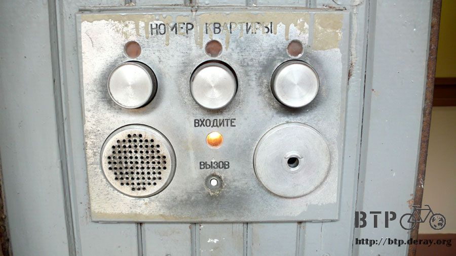
卸下小多的後輪，騎了一萬公里的輪胎和全新的輪胎來一張比較圖。
舊的胎除了看起來比較多塵土、紋路有些磨損之外，整體來說差異還不大，所以不打算立刻換新的輪胎。
將收到的新輪胎帶在身邊當備用，繼續用原裝的小多往巴黎前進，測試一下原裝車不換輪胎最遠可以騎多少公里？
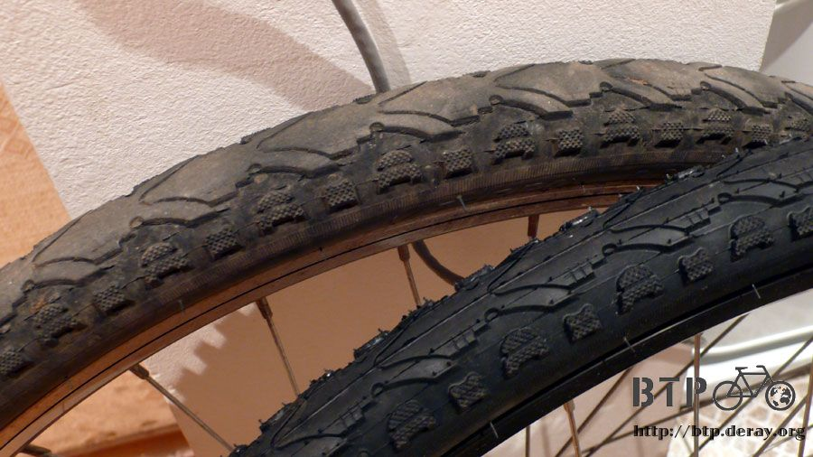
晚上的時候MSI的大家又來找我了，他們工作的時間很長，當地人準時六點就走，可是台灣人都會待到九點左右，而且星期天還要來上班，周休一日。
辛苦工作的各位，希望你們老闆看到之後會給你們加薪水 :D
晚上大家帶我去吃韓國烤肉，去的路上是搭計程車。說是計程車但是車頂並沒有掛TAXI的招牌，掛牌的計程車車資很昂貴。
而所有在路上跑的車子都可以攔，只要對方願意停的話，攔下來之後就開始喊價錢，成交就上車。
只要你覺得順路或是想賺外快，所有人都可以是計程車司機，大家都攔過很都奇怪的車子，車底破洞的、昨天失火燒過的，甚至連救護車也會停下來。
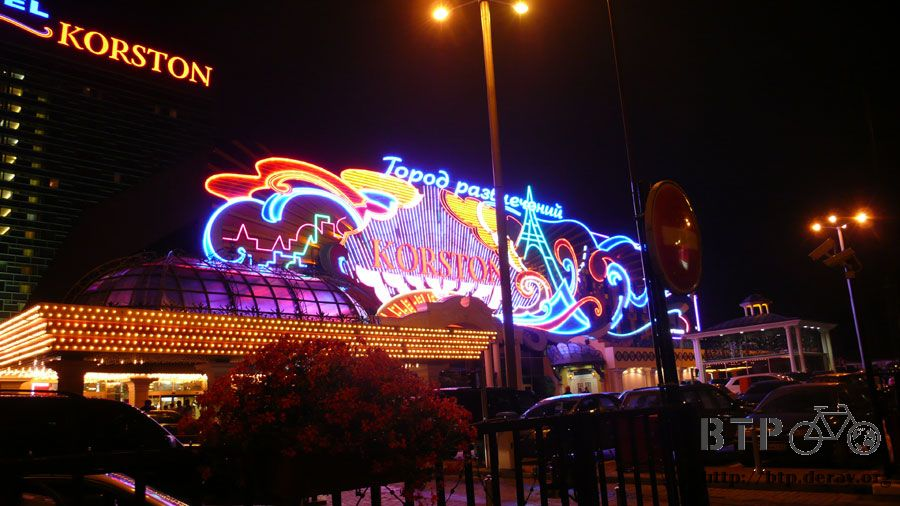
莫斯科的餐廳只要有點規模的，進去之後都要過金屬探測門，還有人在看護照驗明正身。
看起來很像一回事，其實都只是作個樣子，過探測門的時候就算它嗶～嗶～嗶叫也沒關係，根本沒人在意，保全還會叫你快點通過。
賭場在莫斯科是合法的，一樓大廳擺滿了吃角子老虎、各種撲克牌的賭局以及攬客的小姐。
韓國烤肉店的菜單很厲害，各種語言的文字全部標示在上面，而且在這裡可以用中文點餐。
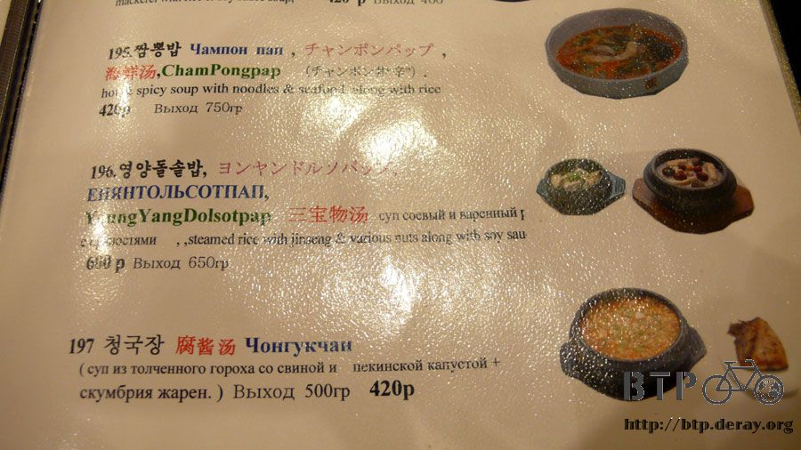
食物的味道算中上，點沒幾道菜可是卻放了滿滿的一桌子，全部都是小菜，一盤一盤的共計有二十六盤。
再加上石鍋拌飯、辣炒年糕、鐵板牛肉、海鮮煎餅這些好吃的美食，超級豐盛的一餐！
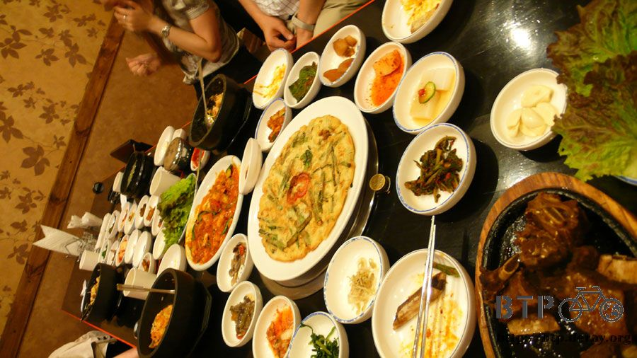
吃飯的時候我提到烏克蘭簽證很花錢也很花時間，路線想往北邊走，不去烏克蘭了。
結果事情的發展大出我的意料之外，MSI的大家出差經驗都很豐富，隨身攜帶護照的大家每本都是貼滿各國的簽證。
我手上的俄羅斯簽證，它的效力比我想像的還要驚人，原來它是俄羅斯和白俄羅斯兩國通用的簽證。
這就表示我根本不需要花大錢在這邊苦苦等烏克蘭簽證核發，大可直接穿越白俄羅斯進入波蘭，這樣的路線是直的，至少省下半個月的路程。
我只能說自己實在是個大豬頭，手上的簽證可以走哪些國家都搞不清楚。
多虧這個天大的好消息～接下來幾天就能好好在莫斯科遊玩～然後往白俄羅斯前進，邁向終點巴黎。
這些國旗是環境品質文教基金會幫忙製作的，等騎到巴黎之後會將這一路上經過的國家通通掛出來。
急轉直下的BTP路線變更，是老天爺在里程破萬之後給予最大的獎賞。
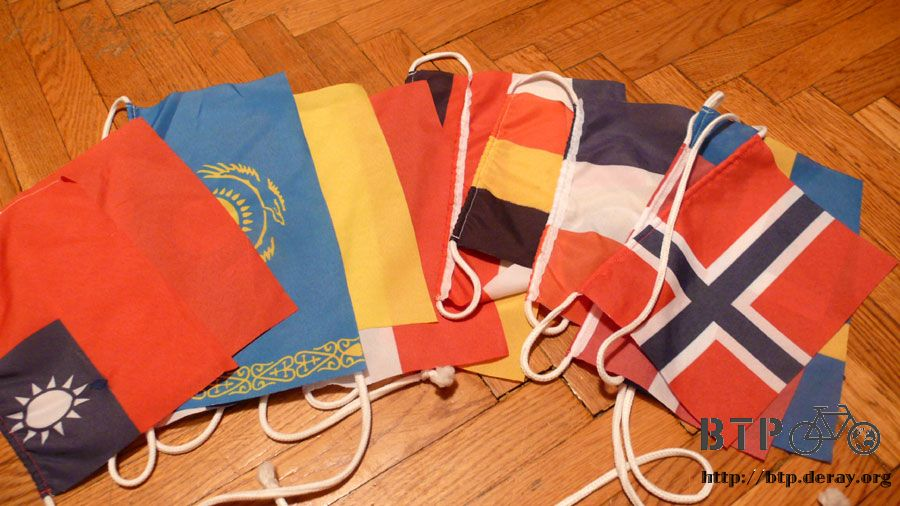
繼續閱讀：8.8 腳上這一雙鞋～帥呀！
俄羅斯-盧布－ 1：1.3 台幣
8.7 |
總計：0元 |
整天白吃白喝 |
|